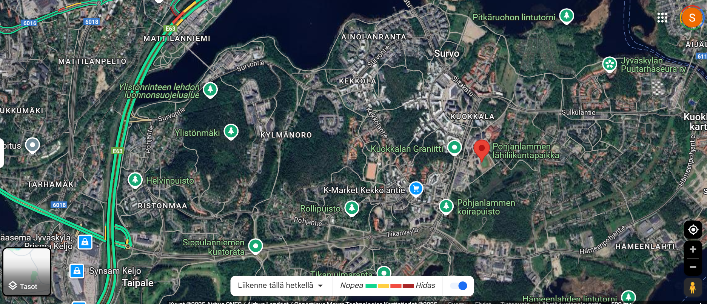
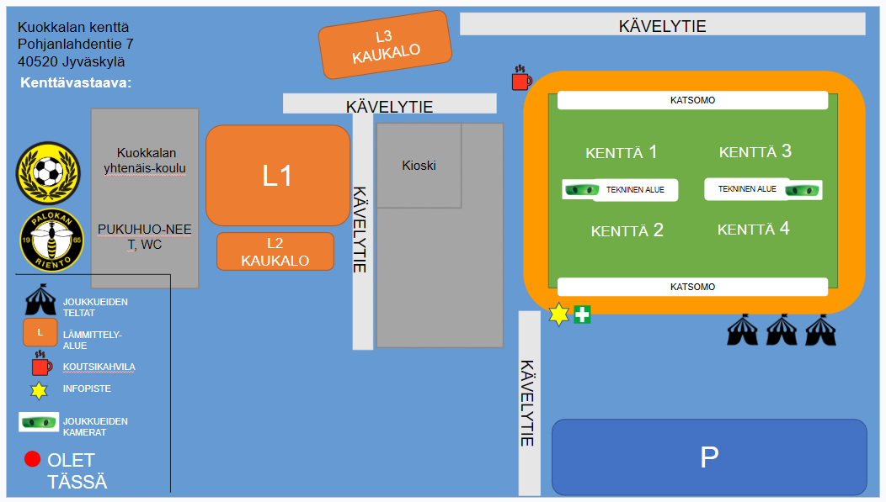
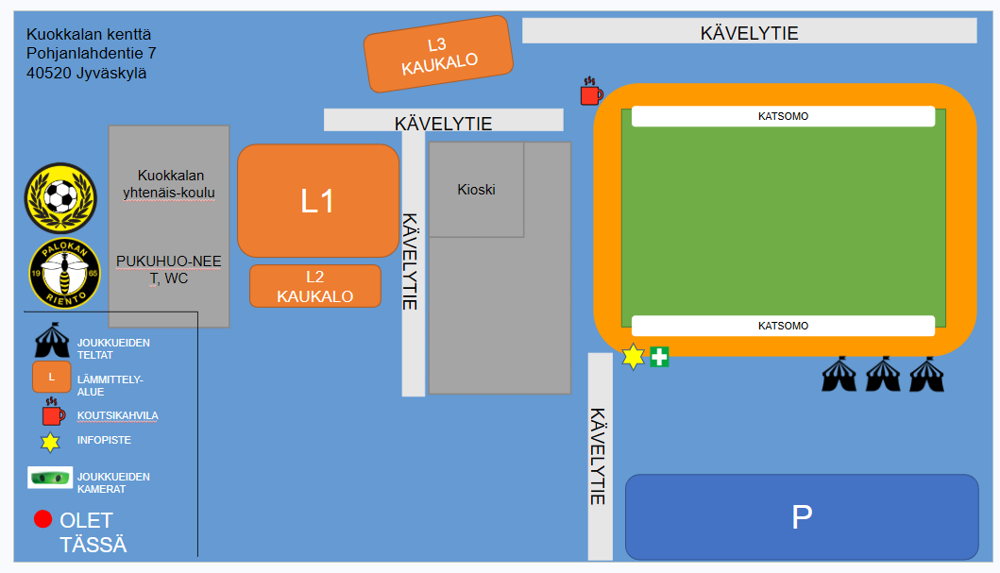

HeinäCup 2026
Talkooinfo
HeinäCup 2026
HeinäCup järjestetään 26.–28.6.2026 Jyväskylässä ja Laukaassa. Joukkueemme osallistuu turnaukseen ja meillä on kokonaisvastuu Kuokkalan kentästä – kenttähenkilökunta, kioski, opastus ja kaikki muu.
Kaikkien pelaajien vanhempien osallistumista toivotaan
Toivomme, että jokaisen pelaajan perheestä löytyy talkoolainen. Tarjolla on noin 3 vuoroa per perhe – yhdessä homma hoituu ja kukaan ei kuormitu liikaa.
Joukkueemme saa 8 € jokaista talkootuntia kohden suoraan joukkueen kassaan – rahat kattavat turnausmaksuja, leirejä ja varusteita.
📋 Ilmoittautuminen vuoroihin tapahtuu Roolit-välilehdeltä.
HeinäCup 2026
HeinäCup takes place 26–28 June 2026 in Jyväskylä and Laukaa. Our team is participating and we are fully responsible for running the Kuokkala field – staff, kiosk, signage, and everything else.
We hope every player's family will take part
We hope each player's family can provide a volunteer. There are around 3 shifts per family – together the workload stays manageable for everyone.
Our team earns €8 for every hour volunteered, paid directly into the team fund – covering tournament fees, camps, and equipment.
📋 Sign-up for shifts is on the Roolit tab.
Talkooroolit – Kuokkalan kenttä
Kokonaisvastuu Kuokkalan kentän toiminnasta koko turnauksen ajan. Toimii esihenkilönä kaikille talkoolaisille kentällä.
- Vastuuhenkilö: Ilkka Ruuska
- Tarvitaan mielellään toinen henkilö apuun – rooli voidaan jakaa kahdelle
- Yhteistyö turnauspäällikön (Sami Perälä) kanssa
Field Manager: Overall responsibility for the Kuokkala field throughout the tournament. Supervises all volunteers on site. Currently: Ilkka Ruuska – a second person to share the role is welcome.
Vastaa Kuokkalan kioskin kokonaisuudesta ja toimii esihenkilönä kioskitiimille. Tämä rooli on täyttämättä – ilmoittaudu pikaisesti!
- Kokonaisvastuu kioskin toiminnasta
- Toimii esihenkilönä kioskihenkilöille
- Hoitaa tuotetäydennykset
- Yhteydenpito kioskipäällikön (Sami Paavilainen) kanssa
- Roolin voi jakaa kahdelle henkilölle
Kiosk Manager: Responsible for the overall operation of the kiosk. Supervises the kiosk team, manages restocking, and liaises with the kiosk director. This role is currently unfilled – please volunteer urgently!
Vastaa tuotteiden esillepanosta ja myynnistä vuoronsa aikana.
- Tuotteiden esillepano ja myynti
- Tuotesaldojen seuranta yhdessä kioskivastaavan kanssa
- Koutsikahvilan täydennykset
- 1–2 henkilöä per vuoro
Kiosk Staff: Handles product display and sales during their shift. Monitors stock levels with the kiosk manager. Restocks the coaches' coffee area. 1–2 people per shift.
Vastaa pelikenttien pelikunnosta ja toiminnasta vuoronsa aikana.
- Pelipallojen sijoittelu ja kunto
- Joukkueiden ja katsojien ohjeistus ja opastus
- Häiriötilanteiden hallinta tai ilmoittaminen eteenpäin
- Tarvitaan 1–2 henkilöä per vuoro
Field Supervisor: Responsible for the playing condition of the fields during their shift. Manages match balls, guides teams and spectators, handles disturbances. 1–2 people per shift.
Vastaa kentän kuulutuksista ja pelitulosten kirjaamisesta järjestelmään.
- Kuulutukset kentällä (ottelut, tiedotteet)
- Musiikin soittaminen
- Pelitulosten kirjaus gameresults-järjestelmään tuomareilta saatujen tietojen perusteella (erillinen ohje)
- 1 henkilö per vuoro
Announcer & Results: Handles field announcements, music, and entering match results into the gameresults system based on referee reports. 1 person per shift.
Ohjaa saapuvat autot ja bussit merkityille parkkipaikoille. Ensimmäinen kontakti kentälle saapuville.
- Henkilöautojen ja linja-autojen ohjaus parkkipaikoille
- Toivottaa tulijat tervetulleeksi – tärkeä ensivaikutelma
- 1 henkilö per vuoro
Parking Guide: Directs arriving cars and buses to designated parking areas. First point of contact for arrivals – creates the first impression of the field. 1 person per shift.
Joustava rooli – auttaa siellä missä kulloinkin tarvitaan. Ensimmäinen varahenkilö, jos muissa rooleissa on vajausta.
- Päivän alussa: kenttien valmistelu ja pysäköinnin tuki
- Päivän aikana: apuna siellä missä on ruuhkaa
- Päivän päätteeksi: toimintojen purku
- 1 henkilö per vuoro
General Helper: Flexible role – helps wherever needed. First substitute if other roles are short-staffed. Assists with setup, busy periods, and end-of-day teardown. 1 person per shift.
Kenttäkartta – Kuokkala / Field Map
Kuokkalan kenttä · Pohjanlahdentie 7, 40520 Jyväskylä
Kenttäsuunnitelma / Field plan

Kenttäkartta – dia 4 / Field layout slide 4

Kenttäkartta – dia 5 / Field layout slide 5
